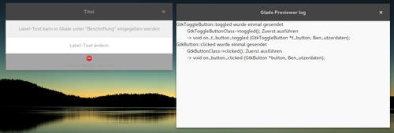

Durchzug oder Mehr als ein Fenster
Schreibe hier deinen Eintrag hin.
Push the button
GUI-Objekte, die immer benötigt werden: Buttons und Labels
Glade
Ausgehend vom letzten Beispiel werden nun ein paar Elemente hinzugefügt, ein Label, ein Button und ein Togglebutton. Jedes Anzeigen- oder Steuerungselement benötigt je ein Container. In diesem Beispiel werden vertikale Boxen angelegt, diese lassen sic hjederzeit erweitern, es ist auch möglich, Container ineinander zu verschachteln.
Den Elementen Button und Togglebutton wird auf clicked bzw. toggled ein Signal zugewiesen. Label dient nur der Anzeige von Text, hier wird kein Signal benötigt.
In der Vorschauansicht kann man testen, ob die korrekte Reaktion ausgelöst wird.
{kind=link}
<?xml version="1.0" encoding="UTF-8"?> <!-- Generated with glade 3.20.0 --> <interface> <requires lib="gtk+" version="3.20"/> <object class="GtkImage" id="image1"> <property name="visible">True</property> <property name="can_focus">False</property> <property name="stock">gtk-dialog-error</property> </object> <object class="GtkApplicationWindow" id="window"> <property name="width_request">500</property> <property name="can_focus">False</property> <property name="title" translatable="yes">Titel</property> <property name="resizable">False</property> <signal name="destroy" handler="on_window_destroy" swapped="no"/> <child> <object class="GtkBox"> <property name="width_request">200</property> <property name="visible">True</property> <property name="can_focus">False</property> <property name="orientation">vertical</property> <property name="homogeneous">True</property> <child> <object class="GtkLabel" id="label"> <property name="visible">True</property> <property name="can_focus">False</property> <property name="label" translatable="yes">Label-Text kann in Glade unter "Beschriftung" eingegeben werden</property> </object> <packing> <property name="expand">False</property> <property name="fill">True</property> <property name="position">0</property> </packing> </child> <child> <object class="GtkButton" id="button"> <property name="label" translatable="yes">Label-Text ändern</property> <property name="visible">True</property> <property name="can_focus">True</property> <property name="receives_default">True</property> <signal name="clicked" handler="on_button_clicked" swapped="no"/> </object> <packing> <property name="expand">False</property> <property name="fill">True</property> <property name="position">1</property> </packing> </child> <child> <object class="GtkToggleButton" id="t_button"> <property name="label" translatable="yes">Oberen Button sperren</property> <property name="visible">True</property> <property name="can_focus">True</property> <property name="receives_default">True</property> <property name="image">image1</property> <property name="image_position">top</property> <property name="always_show_image">True</property> <signal name="toggled" handler="on_t_button_toggled" swapped="no"/> </object> <packing> <property name="expand">False</property> <property name="fill">True</property> <property name="position">2</property> </packing> </child> </object> </child> <child> <placeholder/> </child> </object> </interface>
Python
Ein Klick auf den Button soll in der Labelanzeige einen anderen Text anzeigen, hier wird zufällig ein Element aus einer Liste ausgewählt.
Alle GtkBuilder-Objekte können über die Funktion get_object angesprochen werden:
Gtk.Builder.get_object("name").funktion("zustand") #Beispiel GtkLabel Gtk.Builder.get_object("label_name").set_text("neuer Text")
Der Togglebutton soll die Labelanzeige leeren und Button inaktivieren und bei erneutem Klick wieder freigeben.
Der Zustand des Togglebuttons kann mit der Funktion get_active() abgerufen werden (gibt True/False zurück).
Abhängig vom verwendeten Widget erfordert die Signal-Funktion mindestens einen Parameter.
def on_t_button_toggled(self,widget): if widget.get_active(): #do something else: #do something different
Die vollständige Dokumentation findet man im GTK+ 3 Reference Manual. Das komplette funktionierende Beispiel sieht dann so aus:
#!/usr/bin/env python # -*- coding: utf-8 -*- import random import gi gi.require_version('Gtk','3.0') from gi.repository import Gtk class Handler: def on_window_destroy(self,*args): Gtk.main_quit() def on_button_clicked(self,widget): new_text = random.choice(x.label_texts) x.builder.get_object("label").set_text(new_text) def on_t_button_toggled(self,widget): if widget.get_active(): x.builder.get_object("label").set_text("") x.builder.get_object("button").set_sensitive(False) else: x.builder.get_object("button").set_sensitive(True) class Example: def __init__(self): self.gladefile = "02_labelbutton.glade" self.label_texts = ["The things you used to own, now they own you.", "I am Jack's complete lack of surprise. I am Jack's Broken Heart.", "On a long enough time line, the survival rate for everyone drops to zero.", "Sticking feathers up your butt does not make you a chicken!", "I am Jack's smirking revenge."] self.builder = Gtk.Builder() self.builder.add_from_file(self.gladefile) self.builder.connect_signals(Handler()) window = self.builder.get_object("window") window.show_all() def main(self): Gtk.main() x = Example() x.main()
Fenster mit Aussicht - ein Minimalbeispiel
Glade
Nach dem Start präsentiert sich Glade dreigeteilt, links ist die Fenster-/Widget-Auswahl, in der Mitte die Projektansicht und rechts eine Baumansicht des Projekts, im unteren Bereich können Eigenschaften und Signale editiert werden.
Nun erstellt man ein Fenster und gibt ihm eine Kennung. Mit dieser Kennung wird das Objekt im Programmcode angesprochen.

Um die Ausführung von Funktionen zu initiieren, müssen sie mit Signalen gekoppelt werden. Signale können je nach Objektart verschieden ausgelöst werden, durch Anklicken, Markieren, Editieren, Schalten etc.
Um in diesem Beispiel das Programmfenster mit dem Schließen-Button zu schließen, wird das Signal destroy benötigt. Beim Funktionsnamen hilft die Vorschlagsfunktion nach dem Schema on_kennung_signal. Ich empfehle, diesen Vorschlägen im allgemeinen zu folgen, sie erleichtern die Tipparbeit.

Mit Glade wird kein Programmcode, sondern eine XML-Datei des Typs GtkBuilder erstellt. Diese sieht hier wie folgt aus:
<?xml version="1.0" encoding="UTF-8"?> <!-- Generated with glade 3.20.0 --> <interface> <requires lib="gtk+" version="3.20"/> <object class="GtkApplicationWindow" id="window"> <property name="can_focus">False</property> <property name="title" translatable="yes">Titel</property> <signal name="destroy" handler="on_window_destroy" swapped="no"/> <child> <placeholder/> </child> <child> <placeholder/> </child> </object> </interface>
Python
First things first. Die GtkBuilder-Funktionen stehen im Gtk-Modul aus den Python GObject Introspection-Bindings zur Verfügung:
import gi gi.require_version('Gtk','3.0') from gi.repository import Gtk
Nach dem Aufruf von Gtk.Builder() wird die Glade-Datei geladen. Um die Übersicht zu bewahren, können dies auch mehrere Dateien sein, es sollte allerdings auf eine eindeutige Kennung geachtet werden. Bei doppelten Kennungen ist die zuletzt geladene aktiv.
Anschließend werden die Signale verbunden. Meine Empfehlung ist hier, die dazugehörigen Funktionen der Übersicht wegen in eine eigene Klasse auszulagern.
#!/usr/bin/env python # -*- coding: utf-8 -*- import gi gi.require_version('Gtk','3.0') from gi.repository import Gtk class Handler: def on_window_destroy(self,*args): Gtk.main_quit() class Example: def __init__(self): self.gladefile = "01_minimal.glade" self.builder = Gtk.Builder() self.builder.add_from_file(self.gladefile) self.builder.connect_signals(Handler()) window = self.builder.get_object("window") window.show_all() def main(self): Gtk.main() x = Example() x.main()
Dieses Skript öffnet ein leeres Fenster, das per Schließen-Button beendet werden kann.
Ohne Glade
Das oben konstruierte Beispiel entspricht dem Basisbeispiel im Python GTK+ 3 Tutorial:
import gi gi.require_version('Gtk', '3.0') from gi.repository import Gtk win = Gtk.Window() win.connect("delete-event", Gtk.main_quit) win.show_all() Gtk.main()
Man sollte sich von der Kürze dieses Beispiels nicht täuschen lassen. Die eigentlichen Elemente, Boxen, Widget, Buttons, Leisten etc. fehlen hier komplett.
Tutorial-Reihe zu Glade
Intro
Bei der Erstellung der grafischen Oberfläche für gpt habe ich auf Glade zurückgegriffen, einem grafischen Werkzeug, mit dem man relativ einfach GTK+-Oberflächen erstellen kann.
Mit Glade erstellte Projektdateien sind GtkBuilder-XML-Dateien, die Verbindung zum eigentlichen Programm erfolgt über Signale, dabei werden zahlreiche Programmiersprachen unterstützt. Hier werde ich Python verwenden.
Da es in den letzten Jahren Versionssprünge sowohl bei Python als auch GTK+ gegeben hat (jeweils von 2.x auf 3.x), gibt es viele Dokumentationen und Tutorials, die nicht 1:1 anwendbar sind, d.h. die Funktionen sind meist gleich, nur die Syntax unterscheidet sich minimal (siehe Links).
An dieser Stelle versuche ich aktuell zu bleiben, derzeit mit Python 3.5.2 und Glade 3.20.0.
Nicht exklusiv
GTK+-Elemente können natürlich auch ohne Glade direkt in den Quellcode des Programms geschrieben werden. Es ist möglich, beide Optionen parallel zu verwenden oder auch im Verlauf das eine gegen das andere zu ersetzen.
Links
- The Python GTK+ 3 Tutorial - Grundlagen der Programmierung von GTK+-GUI mit Python
- Creating a GUI using PyGTK and Glade - Grundlagentutorial für PyGTK (Python 2.x)
- Programmieren mit Python und Glade - umfangreiches Tutorial auf Deutsch
Es begann ganz harmlos
GoPros sind aufmerksamkeitsheischende Zeitfresser.
Man versucht sie an schöne Orte zu führen, man produziert dabei Unmengen an Daten, die man dann in mehr oder weniger aufopferungsvoller Arbeit im Videoeditor möglichst ansehnlich zurecht schneidet.
Wenn man ganz schlau sein möchte, schreibt man ein paar Skripte, die einem etwas Arbeit abnehmen.
Und dann schreibt man eine kleine textbasierte UI, um das etwas abzurunden.
Und dann erwischt man sich dabei, eine graphische Oberfläche zusammen zu zimmern.
Und dann schreibt man das in ein Blog...